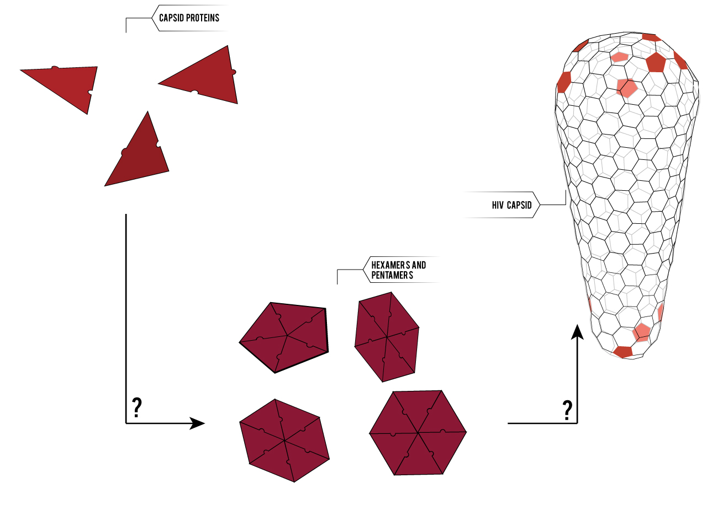
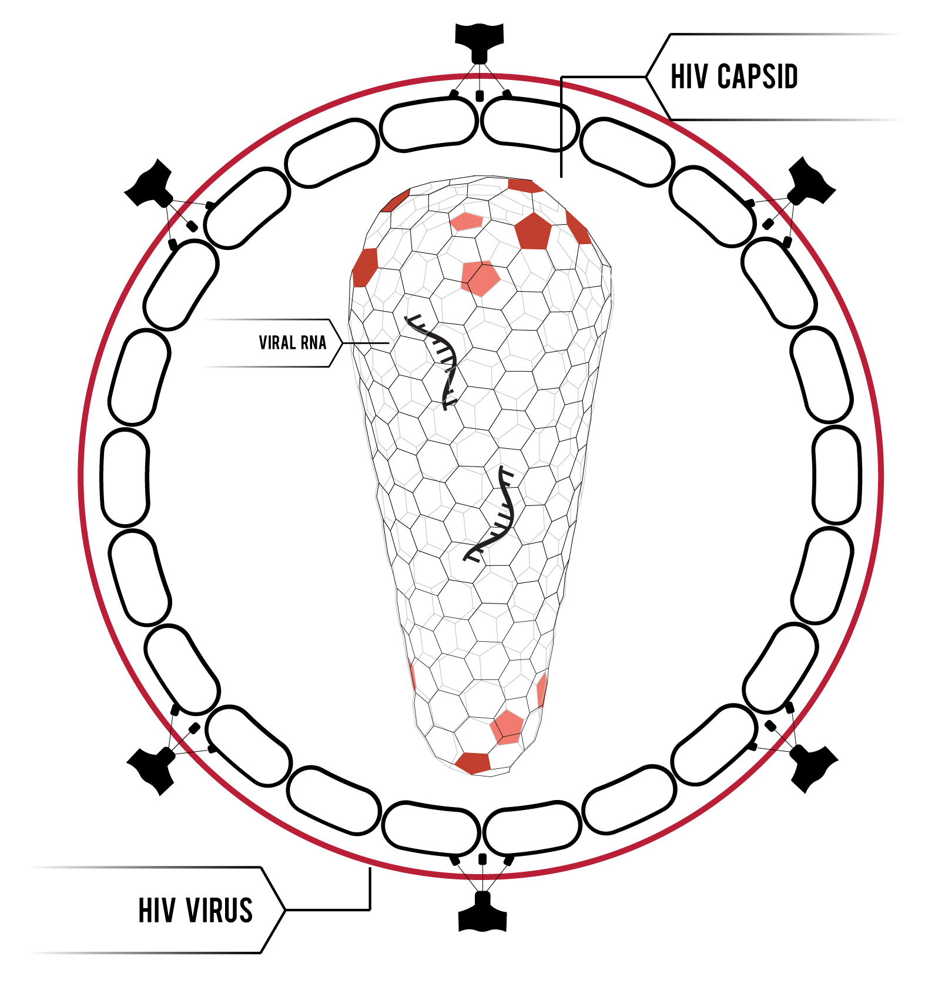

I'm surprised you had the courage to take the responsibility yourself. Look, I can take you as far as Anchorhead. You can get a transport there to Mos Eisley or wherever you're going. I don't know what you're talking about. I am a member of the Imperial Senate on a diplomatic mission to Alderaan--
The plans you refer to will soon be back in our hands. The more you tighten your grip, Tarkin, the more star systems will slip through your fingers. I'm surprised you had the courage to take the responsibility yourself.
Look, I can take you as far as Anchorhead. You can get a transport there to Mos Eisley or wherever you're going. A tremor in the Force. The last time I felt it was in the presence of my old master. What good is a reward if you ain't around to use it? Besides, attacking that battle station ain't my idea of courage. It's more like…suicide.
As you wish. You don't believe in the Force, do you? What?! A tremor in the Force. The last time I felt it was in the presence of my old master.
All right. Well, take care of yourself, Han. I guess that's what you're best at, ain't it? Hokey religions and ancient weapons are no match for a good blaster at your side, kid. Don't underestimate the Force.
I need your help, Luke. She needs your help. I'm getting too old for this sort of thing. Kid, I've flown from one side of this galaxy to the other. I've seen a lot of strange stuff, but I've never seen anything to make me believe there's one all-powerful Force controlling everything. There's no mystical energy field that controls my destiny. It's all a lot of simple tricks and nonsense.
I'm surprised you had the courage to take the responsibility yourself. I don't know what you're talking about. I am a member of the Imperial Senate on a diplomatic mission to Alderaan-- I don't know what you're talking about. I am a member of the Imperial Senate on a diplomatic mission to Alderaan--
You mean it controls your actions? I'm surprised you had the courage to take the responsibility yourself. Hokey religions and ancient weapons are no match for a good blaster at your side, kid. He is here.
She must have hidden the plans in the escape pod. Send a detachment down to retrieve them, and see to it personally, Commander. There'll be no one to stop us this time! The plans you refer to will soon be back in our hands.
Still, she's got a lot of spirit. I don't know, what do you think? I need your help, Luke. She needs your help. I'm getting too old for this sort of thing. I'm surprised you had the courage to take the responsibility yourself.
Leave that to me. Send a distress signal, and inform the Senate that all on board were killed. Your eyes can deceive you. Don't trust them. She must have hidden the plans in the escape pod. Send a detachment down to retrieve them, and see to it personally, Commander. There'll be no one to stop us this time!
I have traced the Rebel spies to her. Now she is my only link to finding their secret base. Alderaan? I'm not going to Alderaan. I've got to go home. It's late, I'm in for it as it is. I want to come with you to Alderaan. There's nothing for me here now. I want to learn the ways of the Force and be a Jedi, like my father before me.
Alderaan? I'm not going to Alderaan. I've got to go home. It's late, I'm in for it as it is. I find your lack of faith disturbing. I need your help, Luke. She needs your help. I'm getting too old for this sort of thing.
You are a part of the Rebel Alliance and a traitor! Take her away! You're all clear, kid. Let's blow this thing and go home! Look, I can take you as far as Anchorhead. You can get a transport there to Mos Eisley or wherever you're going.
Ye-ha! Look, I can take you as far as Anchorhead. You can get a transport there to Mos Eisley or wherever you're going. Remember, a Jedi can feel the Force flowing through him. Look, I ain't in this for your revolution, and I'm not in it for you, Princess. I expect to be well paid. I'm in it for the money.
I'm trying not to, kid. Escape is not his plan. I must face him, alone. What!? Obi-Wan is here. The Force is with him.
I don't know what you're talking about. I am a member of the Imperial Senate on a diplomatic mission to Alderaan-- Red Five standing by. I want to come with you to Alderaan. There's nothing for me here now. I want to learn the ways of the Force and be a Jedi, like my father before me.
The Force is strong with this one. I have you now. A tremor in the Force. The last time I felt it was in the presence of my old master. The plans you refer to will soon be back in our hands. Don't act so surprised, Your Highness. You weren't on any mercy mission this time. Several transmissions were beamed to this ship by Rebel spies. I want to know what happened to the plans they sent you.
What good is a reward if you ain't around to use it? Besides, attacking that battle station ain't my idea of courage. It's more like…suicide. I don't know what you're talking about. I am a member of the Imperial Senate on a diplomatic mission to Alderaan--